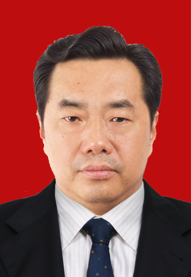
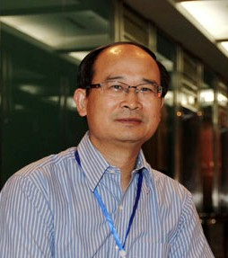
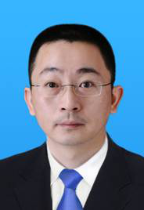
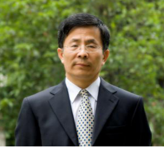
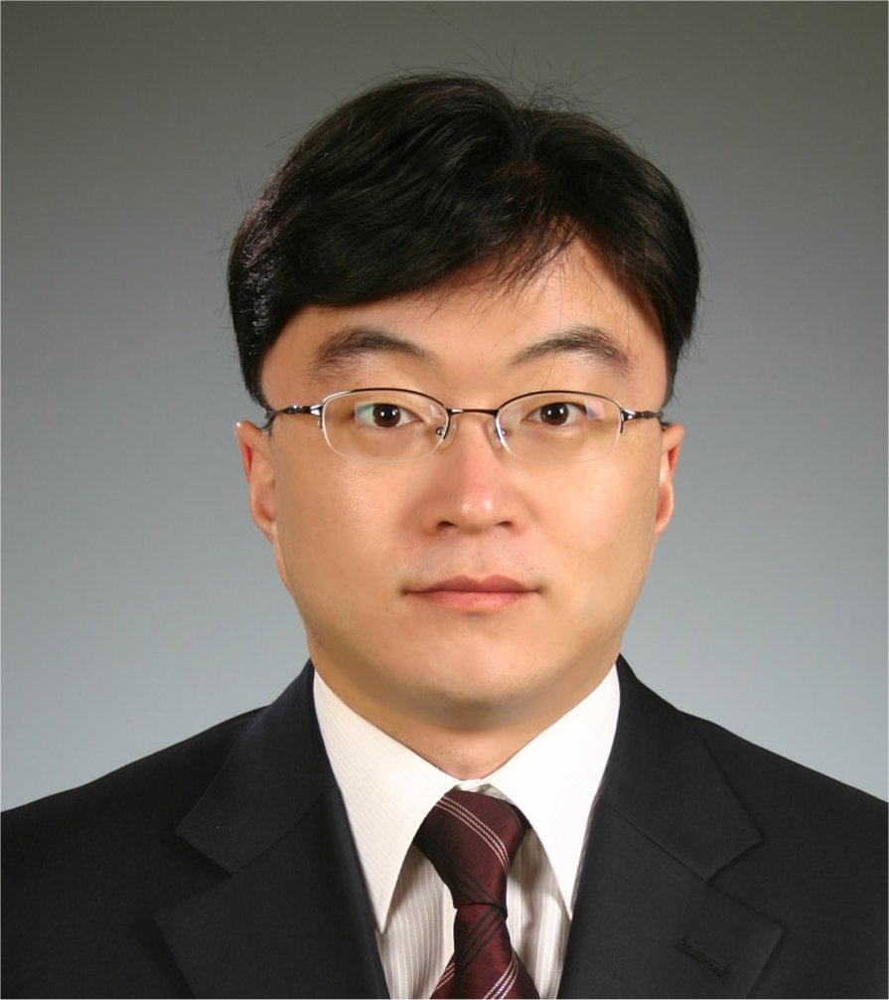
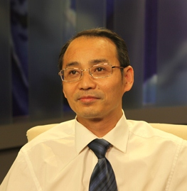

-
名誉主席
Honorary Chairman迈克.阿姆比尔
博士，瑞士前国务卿，瑞士苏黎世联邦理工大学教授Dr. Sc Techn. ETH Zurich,Professor. former State Secretary of Switzeriand
-
大会主席
Chairman方海洋
重庆邮电大学委员会书记，教授，东京大学博士Dr. Sc Tokyo University.Professor. Chairman of Chongqing University of Posts and Telecommunications.
副主席
（按姓氏排序）
Vice Chairman-
白渝平（BAI Yuping）
重庆市经济管理学会会长,中国农业大学经济管理学院MBA导师，重庆市社会科学院特邀研究员
Chairman of Chongqing Association of Economics and Management, MBA tutor at China Agricultural University , a guest researcher at the Chongqing Academy of Social Sciences
-
吕延杰（LUE Yanjie）

北京邮电大学，教授，中国经济学会副理事长，中国管理科学院院士等职位，日本京都大学博士
Dr. Kyoto University Professor at the School of Economics and Management, Beijing University of Posts and Telecommunications. His Ph.D degree was received from Kyoto University
-
梅洪常(MEI Hongchang)
梅洪常，重庆工商大学管理学教授，硕士生导师，管理学院院长，企业管理研究中心主任，中国管理科学院兼职教授。
Dr . MEI Hongchang, Professor of management science , serviced as the Dean of management school at ChongqingTechnology and Business University and the director of Enterprise Management Research Center.
-
屈三才（QU Sancai）
屈三才律师现任上海锦天城（重庆）律师事务所高级合伙人，上海锦天城（重庆）律师事务所负责人，并兼任重庆律师协会知识产权委员会委员，重庆仲裁委员会仲裁员。
Senior partner at Shanghai Allbright Law Offices Chongqing Branch and the Head of Chongqing Branch. He also serves as a member of the Intellectual Property Committee of Chongqing Bar Association and as an arbitrator for the China Chongqing Arbitration Commission.
-
沈江（SHEN jiang）
天津大学管理与经济学部教授、博士生导师；企业战略发展与IE研究中心主任；中国机械工程学会工业工程分会副主任兼秘书长
Dr. SHEN Jiang, Professor at the College of Management and Economics, Tianjin University, serviced as the director of enterprise strategic development and IE Research Center, deputy director and Secretary General of the Industrial Engineering branch of China Society of Mechanical Engineering.
-
许茂增（XU Maozeng）
重庆交通大学教授、博士生导师、管理学院院长、重庆口岸物流与航运发展研究中心常务副主任，兼任中国管理科学与工程学会常务理事
Dr. XU Maozeng, Professor, doctoral tutor, serviced as the Dean of management school at Chongqing Jiaotong University, and the executive vice director at Chongqing port logistics and shipping development research center .
-
庄玉良(ZHUANG Yuliang)

庄玉良 教授，南京审计学院管理学院院长
Ph.D., Professor, Dean of the School of Management, Nanjing Audit University
-
秘书长
Conference Secretary重庆邮电大学经济管理学院院长、工业和信息化部电信经济专家委员会委员、重庆市电子商务与现代物流重点实验室主任
Professor. Dean of the School of Economics and Management, CQUPT, member of Telecommunication economic committee of the Ministry of Industry and Information Technology, director of the key laboratory of electronic commerce and modern logistics in Chongqing

-
会议发起人
Conference Initiator黄东宾，瑞士苏黎世联邦理工学院博士，重庆邮电大学管理科学与工程特聘教授，决策科学学术带头人
Dr. Sc. ETH, CQupt Prof. of Management Science & Engineering,Decision Science Research, School of Economics and Management

-
Jan Agerholm HOEYBYE
水和环境专业土工工程师，主要从事自然资源规划、创新和管理及应用方面的研究
Civil engineering from Lund University in Sweden, specialised in water and environment， mainly worked with the multi-disciplinary aspects of natural resources planning, innovation, management and adaptation plans.
-

刘琦岩（LIU Qiyan）
中国科学技术信息研究所副所长，中国社会科学院研究生院博士。曾任职于科技部火炬高技术产业开发中心、科技部调研室
Deputy director of the Institute of science and technology information of China, recevide his Ph.D. Degree from Chinese Academy of Social Science，serviced at the torch high technology industry development center，Ministry of Science and Technology of China
-

Sungmook Lim
韩国东国大学商学院教授，教学和研究内容包括运营管理、DEA数据分析等
Professor active in teaching and doing research in operations management, DEA data analytics in the Business School, Dongguk University, Seoul, Korea.
-
Nicholas Alexander MILNES
爱德维克资产管理公司（北京公司）副总裁CFA
Director and Partner at Integrity Capital Partners, an asset manager focused on China cross-border private equity and domestic micro-finance investments. He is a CFA and CAIA charterholder.
-
Jacqueline Vanacek
硅谷软件主管，对云计算、移动性、社交媒体和数据分析提供咨询.云计算和大数据分析的福布斯专栏作家。
Jacqueline Vanacek is a Silicon Valley Software Executive who advises on cloud computing, mobility, social media and data analytics; she is also a Forbes columnist on cloud computing and big data analytics.
-

左传长（ZUO Chuanchang）
现任职国家发改委宏观经济研究院经济研究所，博士后，兼任清华大学经管学院MBA导师，北京大学市场经济研究中心研究员
Dr. Zuo serves as a member of the Academy of Macroeconomic Research of the National Development and Reform Commission, and an affiliated vice director of the Research Academy of Tsinghua University.
-

张轮（ZHANG Lun）
同济大学,交通信息工程教授, 国务院学位委员会评审委员、国家科技奖励评审专家、国家自然科学基金评审专家, IEEE会员、IET会员
Professor of transportation information engineering at Tongji University, a review expert of the State Council Academic Degree Committee, the National Science and Technology Award and the National Natural Science Foundation, IEEE member, IET member
-

张毅（ZHANG Yi）
重庆邮电大学 先进制造学院教授,院长，全国检标委工业机器人工作组委员
Professor at the Shool of Advanced Manufacturing, Chongqing University of Posts and Telecommunications, member of the industrial robot working group of the National inspection standards committee